Sampled from FULL validation set (1920 samples). Showing top 20 losses (ocr_v4 worse) + top 20 gains (ocr_v4 better).
| Image | Question | baseline | ocr_v4 | GT | Δ |
|---|---|---|---|---|---|
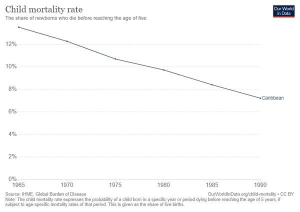 | Which year recorded the lowest mortality rate in the Caribbean? | 1970 (1.00) | Marriotts Vineyard (0.00) | 1990 | -1.00 |
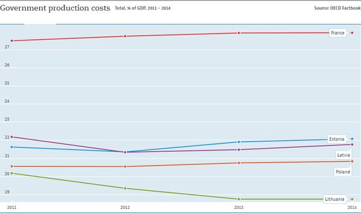 | Which country has highest government production costs over the given years? | France (1.00) | 137130 (0.00) | France | -1.00 |
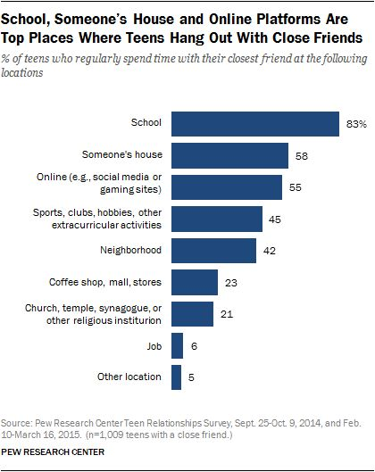 | Which is the top place in the chart? | School (1.00) | 6.06 (0.00) | School | -1.00 |
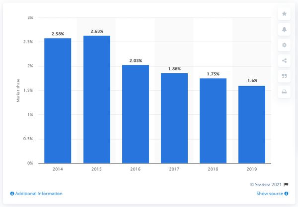 | Which year has 2.03%? | 2014 (1.00) | 4720 (0.00) | 2016 | -1.00 |
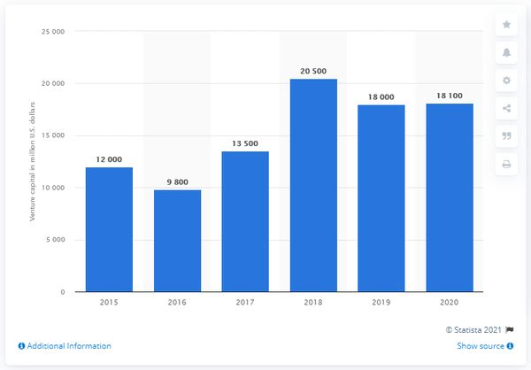 | The bar chart covers how many years? | 6 (1.00) | 10000 (0.00) | 6 | -1.00 |
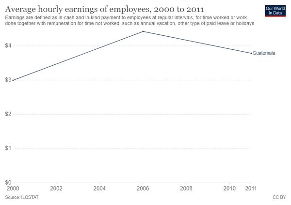 | Which year it is in peak? | 2006 (1.00) | 155 (0.00) | 2006 | -1.00 |
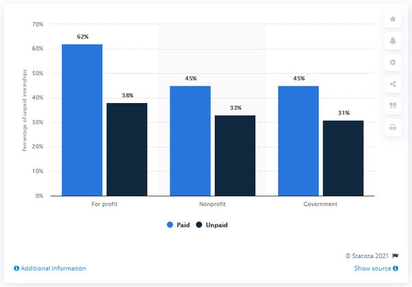 | What is the average unpaid internships ? | 33 (1.00) | Roddy White (0.00) | 34 | -1.00 |
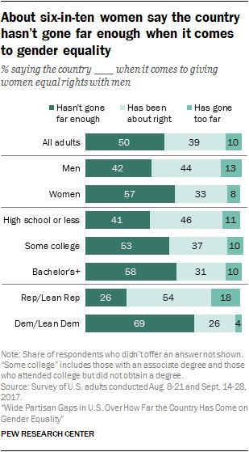 | Is the sum of Bachelors more than the sum of Women? | Yes (1.00) | 30740 (0.00) | Yes | -1.00 |
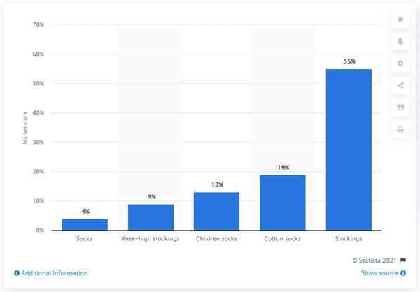 | What is the sum of cotton socks and children socks? | 32 (1.00) | 11 (0.00) | 32 | -1.00 |
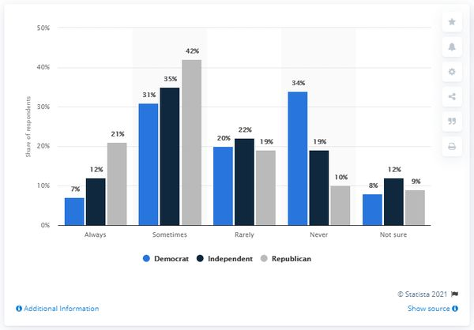 | What is the value of the highest bar? | 42 (1.00) | 69027.77 (0.00) | 42 | -1.00 |
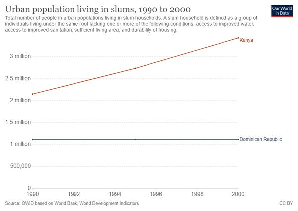 | Which year recorded the least urban population living in slums in Kenya? | 1990 (1.00) | 8.2 (0.00) | 1990 | -1.00 |
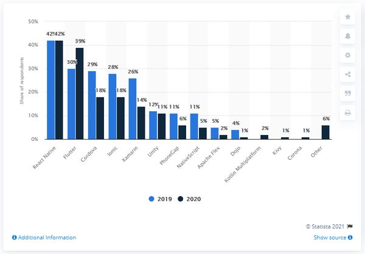 | Which is the most famous cross platform mobile framework used by developers? | React Native (1.00) | 2004 (0.00) | React Native | -1.00 |
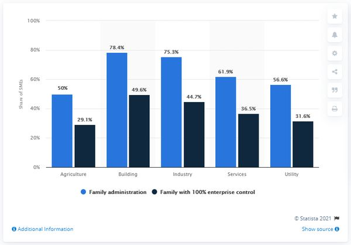 | What is the average for industry? | 61.5 (1.00) | 50.7 (0.00) | 60 | -1.00 |
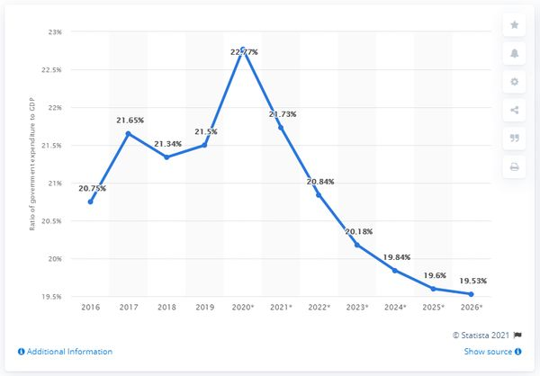 | In which year the ratio of government expenditure to gross domestic product peak? | 2020 (1.00) | 1.91 (0.00) | 2020 | -1.00 |
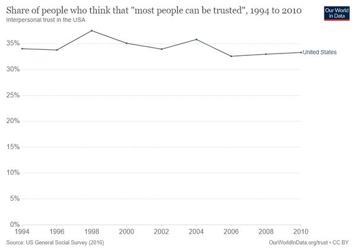 | During which period does the line have the greatest increase? | 1994 (1.00) | 79.5 (0.00) | 1998 | -1.00 |
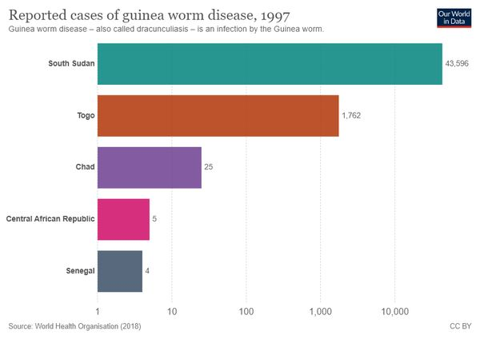 | Which place shows the highest cases of guinea worm? | South Sudan (1.00) | 24 (0.00) | South Sudan | -1.00 |
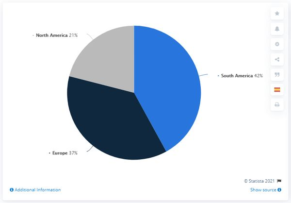 | What is the difference between maximum profit contribution and minimum profit contribution? | 22 (1.00) | 1.12 (0.00) | 21 | -1.00 |
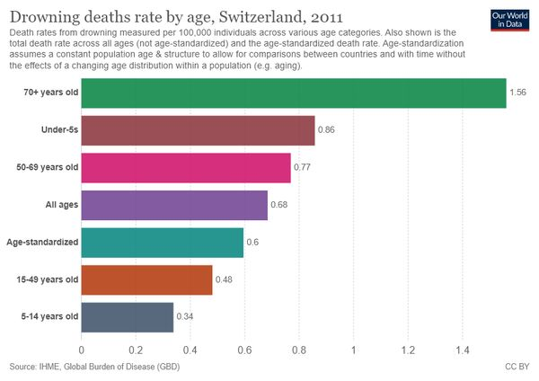 | Find the median value of all the bars? | 0.68 (1.00) | Lago di Como (0.00) | 0.68 | -1.00 |
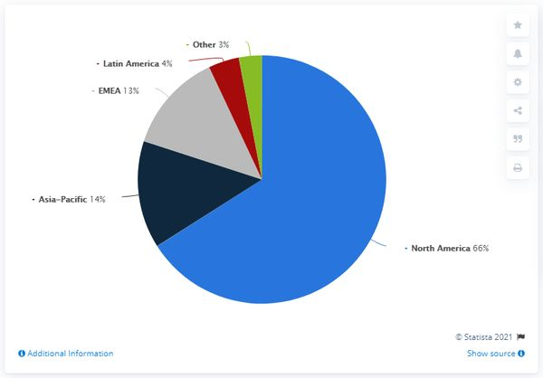 | Which country has the maximum revenue share? | North America (1.00) | 95 (0.00) | North America | -1.00 |
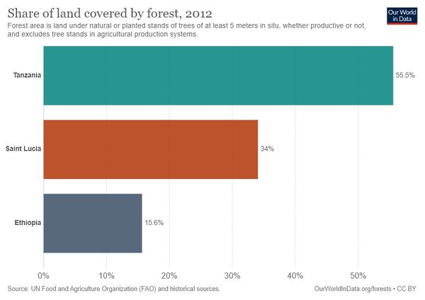 | Which country recorded highest percentage in the chart ? | Tanzania (1.00) | 7.78 (0.00) | Tanzania | -1.00 |
| Image | Question | baseline | ocr_v4 | GT | Δ |
|---|---|---|---|---|---|
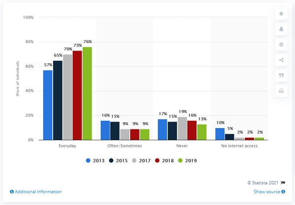 | In which year there was more usage of internet everyday among individual? | 18.7 (0.00) | 2019 (1.00) | 2019 | +1.00 |
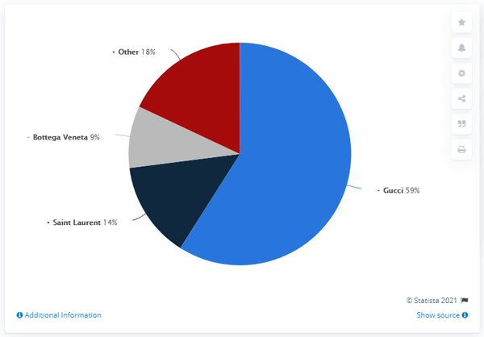 | In the pie chart, what blue color denotes ? | 1.95 (0.00) | Gucci (1.00) | Gucci | +1.00 |
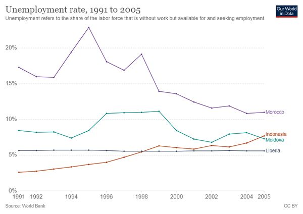 | In which year did the color green and orange bar intersect? | 633251 (0.00) | 1994 (1.00) | 2005 | +1.00 |
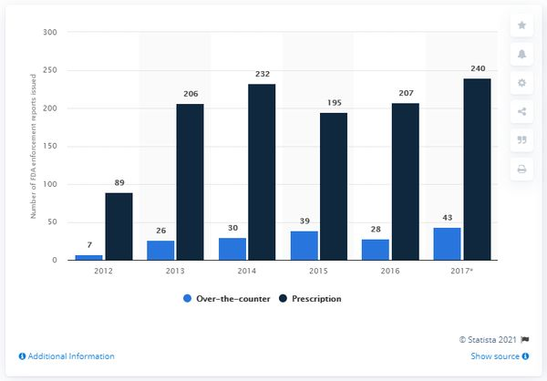 | What is the sum of first data and last data in the chart? | 14 (0.00) | 249 (1.00) | 247 | +1.00 |
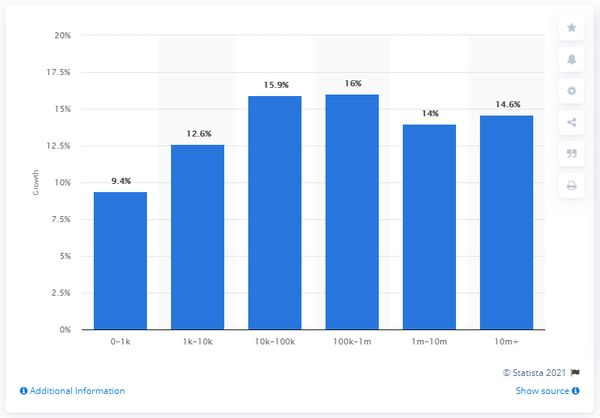 | What was the combined growth rate for 1m-10m and 10m+? | 117 (0.00) | 28.7 (1.00) | 28.6 | +1.00 |
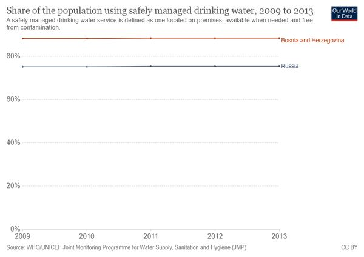 | Which country is represented by the blue color line? | 591 (0.00) | Russia (1.00) | Russia | +1.00 |
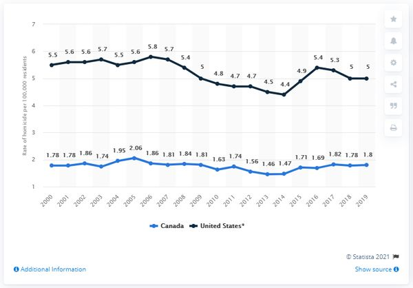 | The rate of homicide in Canada and the United States are available from which year ? | 1400 (0.00) | 2000 (1.00) | 2000 | +1.00 |
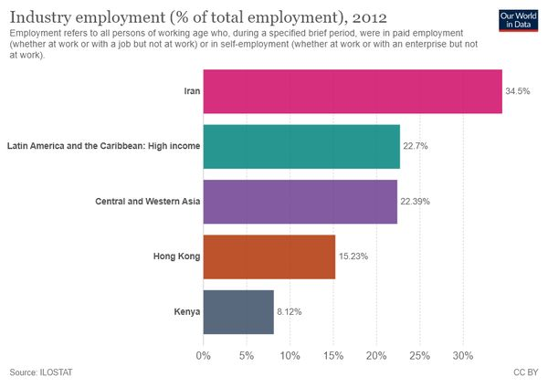 | How many colors are represented in the bar?? | 561.23 (0.00) | 5 (1.00) | 5 | +1.00 |
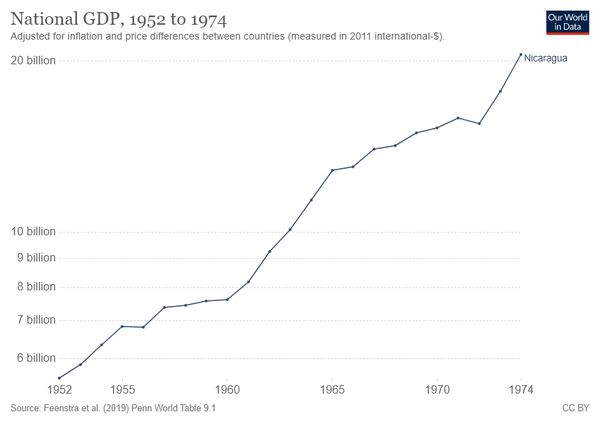 | In which year National GDP value crossed 20 billion? | 0.99 (0.00) | 1974 (1.00) | 1974 | +1.00 |
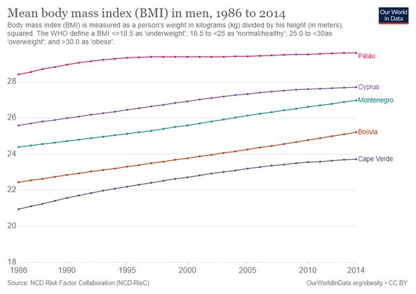 | How many regions saw increases? | Ford Fiesta (0.00) | 5 (1.00) | 5 | +1.00 |
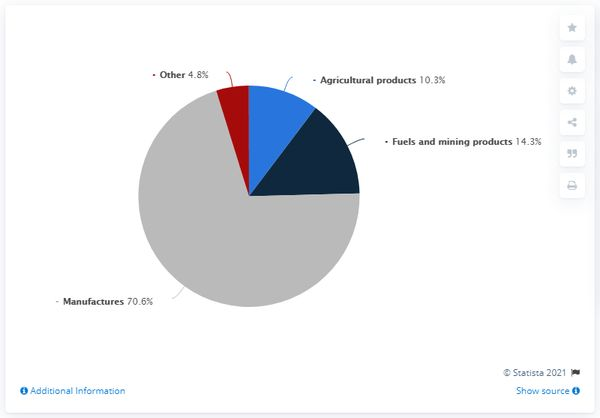 | Which group has the majority exports? | Keogh IRA (0.00) | Manufactures (1.00) | Manufactures | +1.00 |
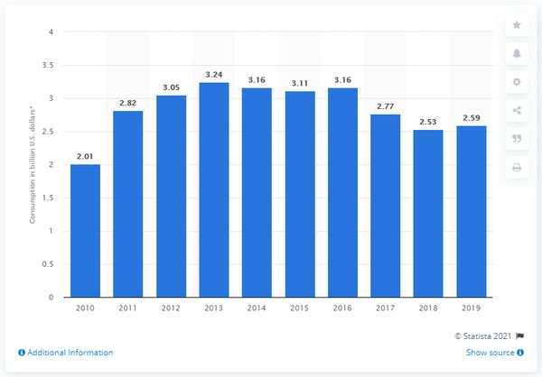 | Which year has the highest value? | 297 (0.00) | 2019 (1.00) | 2013 | +1.00 |
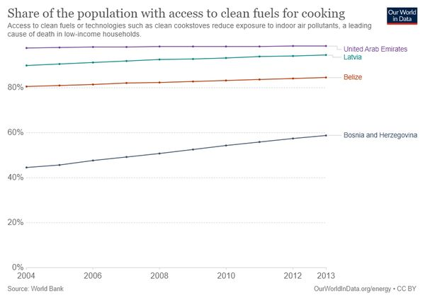 | Which of the following countries has had higher access to clean fuels for cooking over the years, Latvia or Belize? | 2011 (0.00) | Latvia (1.00) | Latvia | +1.00 |
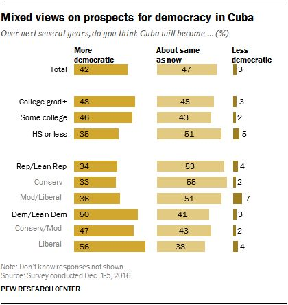 | Which country data analysed here? | Donald Trump (0.00) | Cuba (1.00) | cuba | +1.00 |
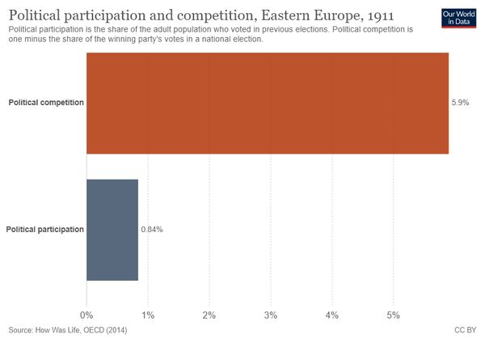 | Which year mentioned in the heading of the chart? | 45.64 (0.00) | 1911 (1.00) | 1911 | +1.00 |
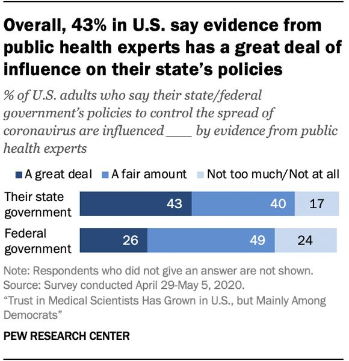 | Is the A Great deal value of the state government more than Federal government ? | 5.67 (0.00) | Yes (1.00) | Yes | +1.00 |
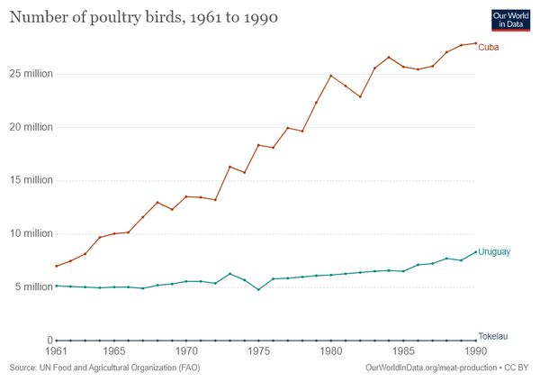 | Which country has the highest rise in the number of poultry birds from 1961 to 1990? | 27.07 (0.00) | Cuba (1.00) | Cuba | +1.00 |
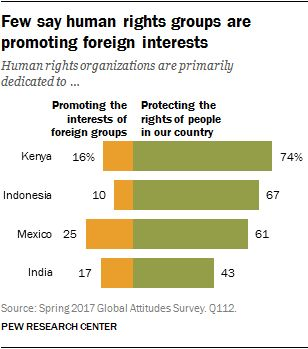 | In which country, 16% of human rights organizations are primarily dedicated to promoting the interest of foreign groups? | 53191 (0.00) | Kenya (1.00) | Kenya | +1.00 |
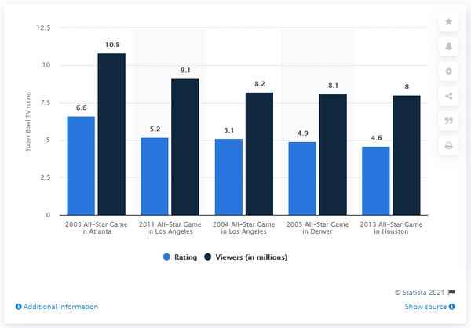 | What is the number of viewers in 2005? | 8.56 (0.00) | 8.2 (1.00) | 8.1 | +1.00 |
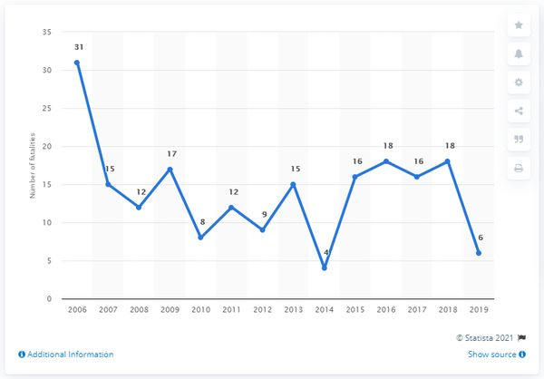 | Which year has the highest number of fatalities? | Christian Ronaldo (0.00) | 2018 (1.00) | 2006 | +1.00 |